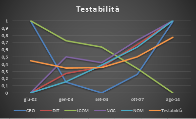
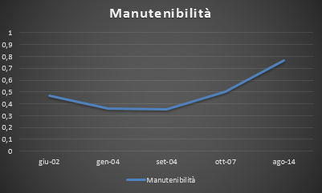

Analisi di Manutenibilità
La manutenibilità di un sistema si compone di quattro sottocaratteristiche:
- Analizzabilità;
- Modificabilità;
- Stabilità;
- Testabilità.
L'interpretazione della tabella è la seguente: il fattore di manutenibilità è descritto dai quattro criteri già discussi precedentemente. I singoli criteri dipendono dalle metriche assegnate in accordo con uno specifico peso.
Analizzabilità
L'analizzabilità rappresenta la facilità con la quale è possibile analizzare il codice per localizzare un errore nello stesso.

Modificabilità
La modificabilità rappresenta la capacità del prodotto software di permettere l'implementazione di una specificata modifica (sostituzioni componenti).
Stabilità
LA stabilità rappresenta la capacità del software di evitare effetti inaspettati derivanti da modifiche errate.

Testabilità
La testabilità rappresenta la capacità di essere facilmente testato per validare le modifiche apportate al software.

Manutenibilità
